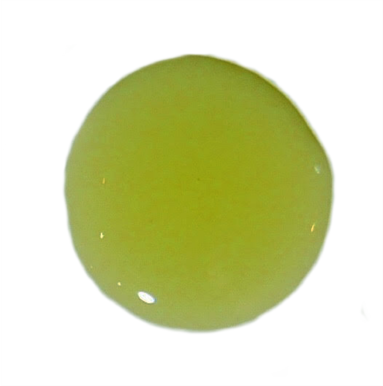
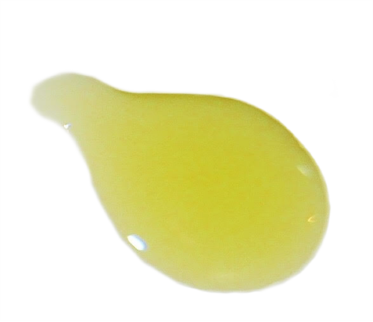
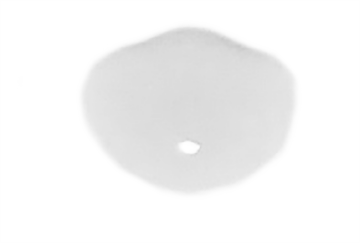
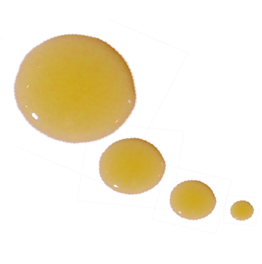

Interactive
Cooking with oil
What you didn't know
Before you begin cooking with oil, there are two main characteristics of all oils you should understand: the composition of fat, and the smoke point (the temperature at which oils start to break down, lose nutrients, and flavour.)
Vegetable oils are composed of three different types of fat: monounsaturated fat, polyunsaturated fat, and saturated fat.
MONOUNSATURATED FATS are healthy fats naturally found in olive oil and canola oil. (PS. It's also found in avocados, and nuts.)
POLYUNSATURATED FATS are healthy fats that include omega-3 and omega-6 fat. (Omega-3 is found in fatty fish like salmon and sardines.)
SATURATED FATS are an unhealthy fat naturally found in meat, higher fat milk, cheese, yogurt and tropical oils.
how it fares in cooking.
 Olive
 Canola
 Coconut
 Peanut